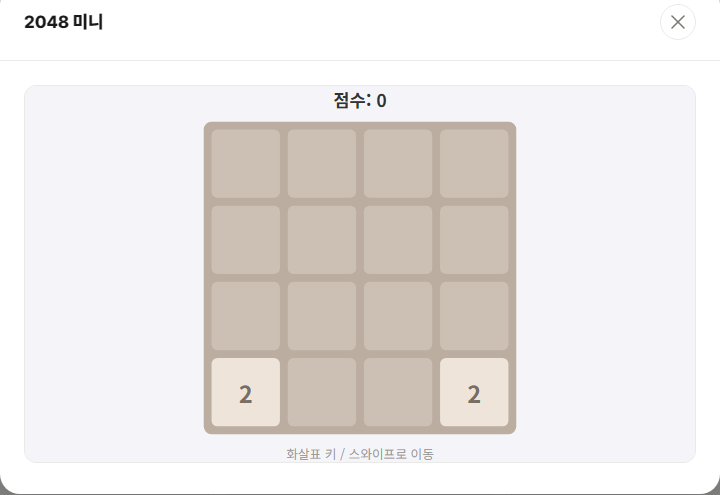

2048 미니는 4x4 보드에서 화살표 키(또는 스와이프)로 타일을 밀어 같은 숫자끼리 합치며 점수를 쌓는 퍼즐 게임입니다. 원작 2048과 동일한 규칙을 가볍게 즐길 수 있도록 구현했습니다.

기본 규칙
- 방향키를 누르면 보드의 모든 타일이 그 방향으로 밀립니다.
- 이동 중 같은 숫자의 타일이 만나면 하나로 합쳐지고, 합쳐진 숫자만큼 점수가 올라갑니다.
- 매 이동 후 빈 칸에 2 또는 4 타일이 새로 생깁니다.
- 더 이상 이동할 칸이 없고 합칠 타일도 없으면 게임이 종료됩니다.
고득점 요령
1. 가장 큰 숫자를 한쪽 구석에 고정하세요
가장 큰 숫자 타일을 보드 네 귀퉁이 중 한 곳(예: 오른쪽 아래)에 두고, 그 타일이 움직이지 않도록 방향키 사용 순서를 관리하는 것이 2048류 게임의 기본 전략입니다. 타일이 계속 이리저리 움직이면 큰 숫자를 만들 기회가 줄어듭니다.
2. 두세 방향키만 반복해서 사용하세요
예를 들어 "아래-오른쪽"을 기본으로 반복하고, 막힐 때만 "왼쪽"이나 "위"를 한 번씩 섞는 방식으로 플레이하면 큰 숫자가 구석에서 흐트러지지 않고 쌓이기 쉽습니다.
3. 보드를 너무 일찍 꽉 채우지 마세요
작은 숫자 타일들을 정리하지 않고 방치하면 빈 칸이 빨리 사라져 더 이상 움직일 곳이 없는 상태로 게임이 끝나버립니다. 합칠 수 있는 타일은 미리미리 합쳐서 보드에 여유 공간을 유지하세요.
점수를 얼마나 쌓을 수 있는지 직접 도전해보고 싶다면 게임 목록에서 2048 미니를 플레이해 보세요.